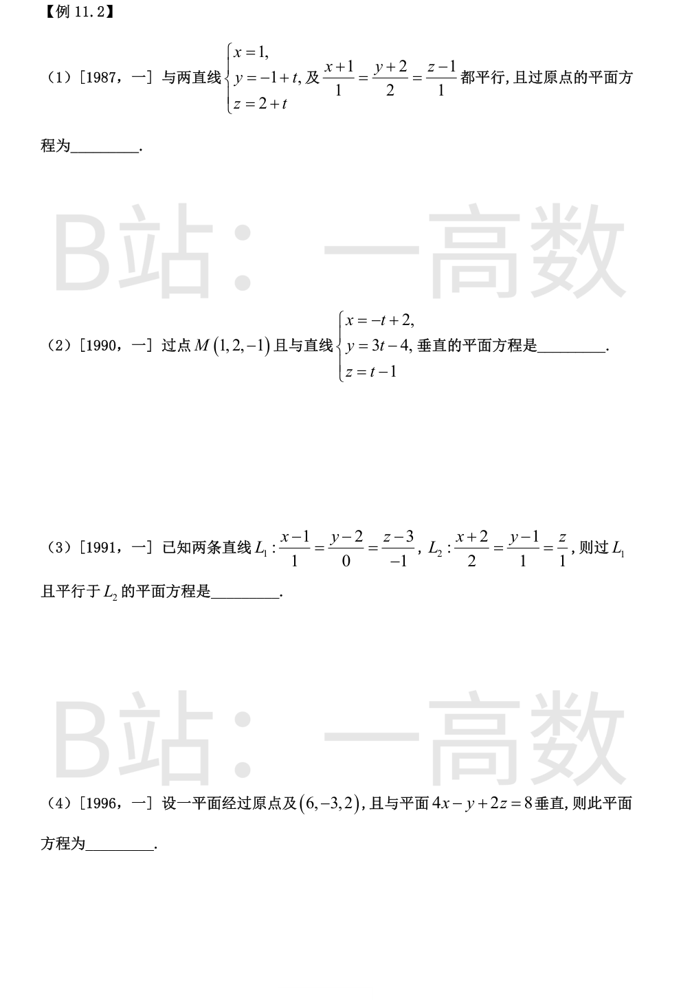
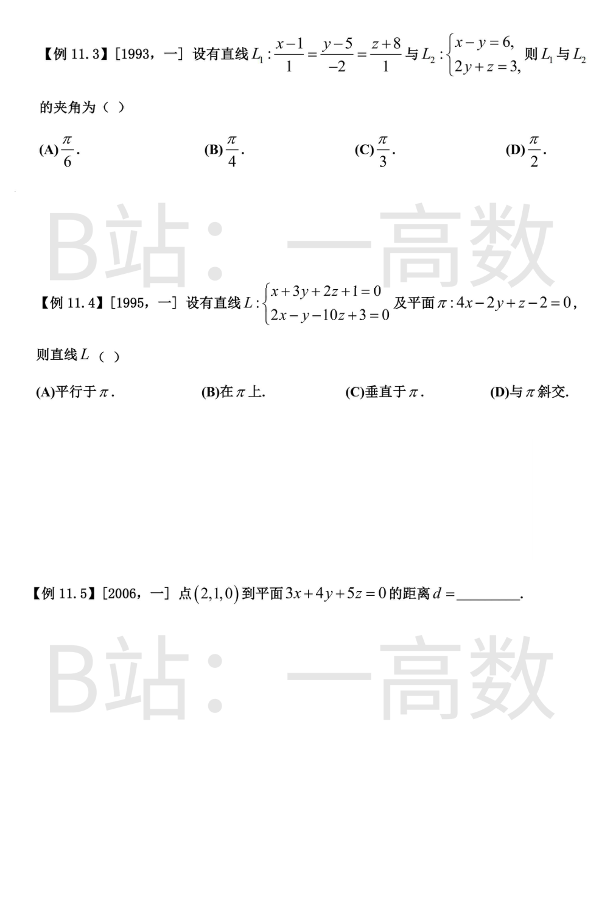
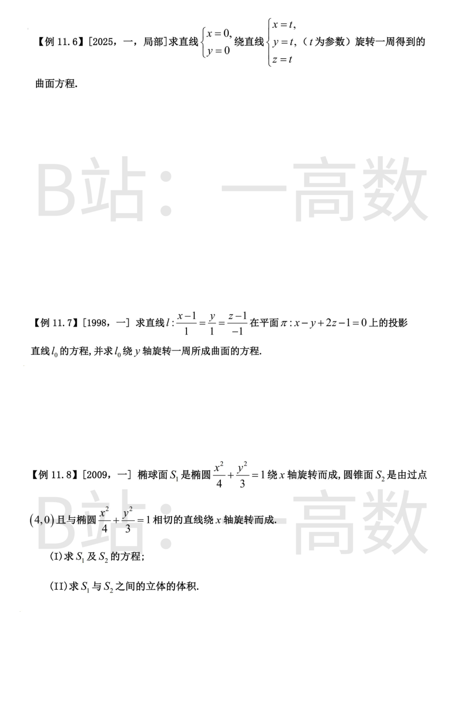
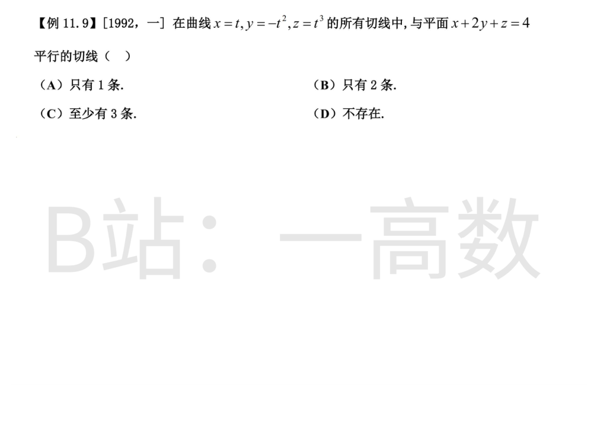
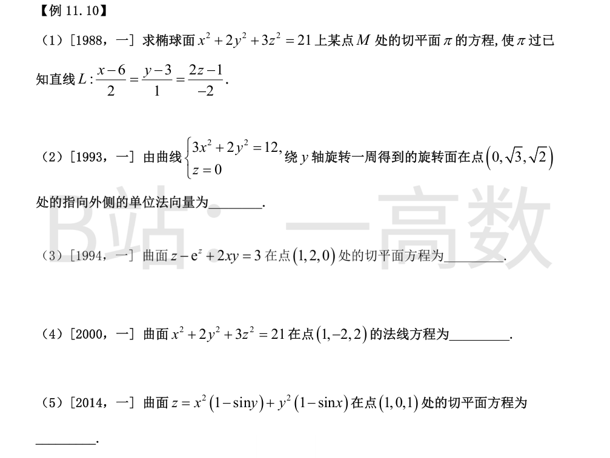
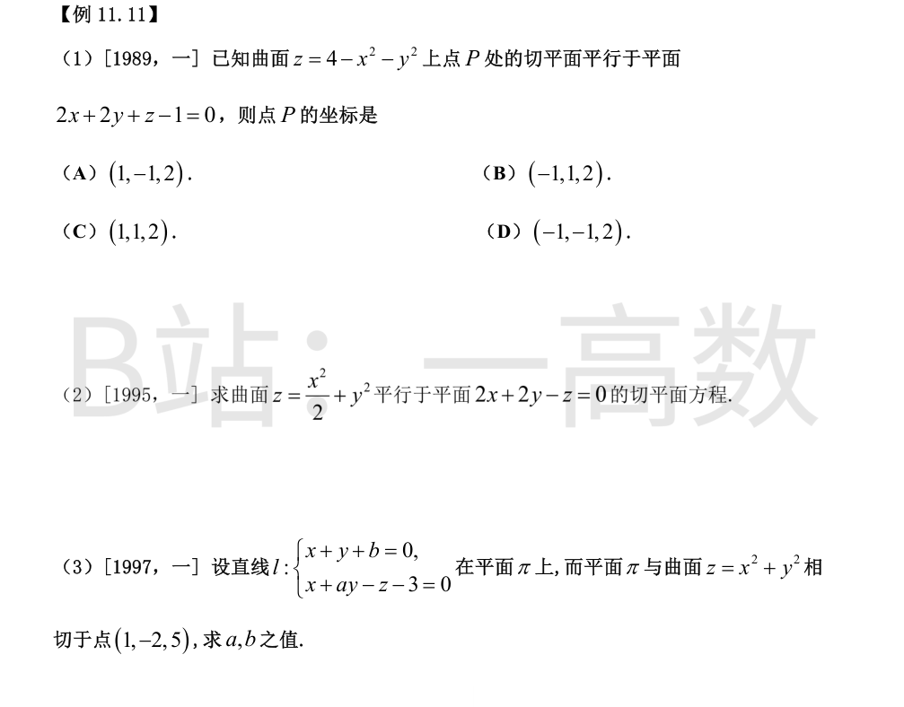
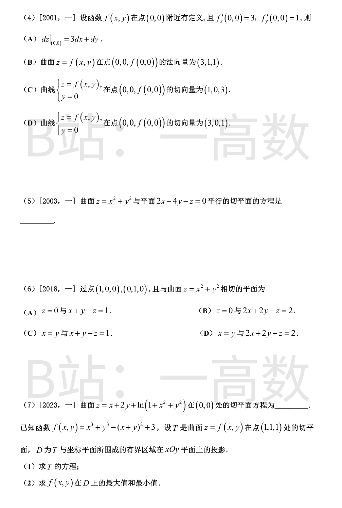

两直线方向向量：s₁=(0,1,1)，s₂=(1,2,1)。
所求平面与两直线都平行，法向量取
$$n=s_1\times s_2=\begin{vmatrix} i&j&k\\0&1&1\\1&2&1\end{vmatrix}=(1\cdot1-1\cdot2,\ 1\cdot1-0\cdot1,\ 0\cdot2-1\cdot1)=(-1,1,-1).$$
过原点：-x+y-z=0，即 x-y+z=0。
直线方向 s=(-1,3,1)。平面与直线垂直 ⟹ s 即为法向量 n=(-1,3,1)。
过 M(1,2,-1)：-(x-1)+3(y-2)+(z+1)=0 ⟹ -x+3y+z-4=0，即 x-3y-z+4=0。
L₁ 过点 P₀(1,2,3)，方向 s₁=(1,0,-1)；L₂ 方向 s₂=(2,1,1)。
$$n=s_1\times s_2=(0\cdot1-(-1)\cdot1,\ (-1)\cdot2-1\cdot1,\ 1\cdot1-0\cdot2)=(1,-3,1).$$
过 L₁（含点 P₀）：(x-1)-3(y-2)+(z-3)=0 ⟹ x-3y+z+2=0。
检验：s₂·n=2-3+1=0（平行于 L₂）；L₂ 上点 (-2,1,0) 代入得 -2-3+0+2=-3≠0（确实不含 L₂）。
平面内的向量 a=(6,-3,2)；已知平面法向量 n₁=(4,-1,2)（因两平面垂直，n₁ 位于所求平面内）。
$$n=n_1\times a=((-1)\cdot2-2\cdot(-3),\ 2\cdot6-4\cdot2,\ 4\cdot(-3)-(-1)\cdot6)=(4,4,-6)\parallel(2,2,-3).$$
过原点：2x+2y-3z=0。
检验：(6,-3,2) 代入得 12-6-6=0 ✓；n·n₁=8-2-6=0 ✓。
s₁=(1,-2,1)。L₂ 为一般式方程，方向 s₂=n₁×n₂，n₁=(1,-1,0)，n₂=(0,2,1)：
$$s_2=((-1)\cdot1-0\cdot2,\ 0\cdot0-1\cdot1,\ 1\cdot2-(-1)\cdot0)=(-1,-1,2).$$
$$\cos\theta=\frac{|s_1\cdot s_2|}{|s_1||s_2|}=\frac{|-1+2+2|}{\sqrt6\cdot\sqrt6}=\frac{3}{6}=\frac12\ \Rightarrow\ \theta=\frac{\pi}{3}.$$
选 (C)。
$$s=n_1\times n_2=(3\cdot(-10)-2\cdot(-1),\ 2\cdot2-1\cdot(-10),\ 1\cdot(-1)-3\cdot2)=(-28,14,-7)=-7(4,-2,1).$$
π 的法向量 n=(4,-2,1)。s∥n，即直线方向与平面法向量平行，L⊥π。选 (C)。
$$d=\frac{|3\cdot2+4\cdot1+5\cdot0|}{\sqrt{3^2+4^2+5^2}}=\frac{10}{\sqrt{50}}=\frac{10}{5\sqrt2}=\sqrt2.$$
注：点 (2,1,0) 恰在球面 x²+y²+z²=5 上、平面过原点，故距离不超过 √5，结果 √2 合理。
旋转轴过原点、方向 u=(1,1,1)/√3。母线上的点 P=(0,0,z₀)。
旋转面上任一点 Q=(x,y,z) 满足两条不变量：
① 沿轴高度不变：Q·u=P·u=z₀/√3 ⟹ x+y+z=z₀；
② 到轴距离不变：P 在轴上的投影为 (z₀/3)(1,1,1)，故 |P-投影|²=z₀²/9+z₀²/9+4z₀²/9=2z₀²/3。
于是 $$|Q|^2=|Q\cdot u|^2+\frac{2z_0^2}{3}=\frac{z_0^2}{3}+\frac{2z_0^2}{3}=z_0^2=(x+y+z)^2.$$
即 x²+y²+z²=(x+y+z)²，展开即 xy+yz+zx=0，这是以直线 x=y=z 为轴、原点为顶点的圆锥面（二次型矩阵特征值：沿 (1,1,1) 为 1，其余为 -1/2，验证无误）。
过 l 作垂直于 π 的平面（投影柱面）：s=(1,1,-1)，n=(1,-1,2)。
$$N=s\times n=(1\cdot2-(-1)(-1),\ (-1)\cdot1-1\cdot2,\ 1\cdot(-1)-1\cdot1)=(1,-3,-2).$$
过 l 上点 (1,0,1)：(x-1)-3y-2(z-1)=0 ⟹ x-3y-2z+1=0。
故 l₀: {x-y+2z-1=0; x-3y-2z+1=0}。
两式相加得 2x-4y=0 ⟹ x=2y，代入第一式得 z=(1-y)/2。l₀ 上的点：(2y, y, (1-y)/2)。
绕 y 轴旋转（到 y 轴距离不变）：
$$x^2+z^2=(2y)^2+\left(\frac{1-y}{2}\right)^2\ \Longrightarrow\ 4x^2+4z^2=16y^2+(1-y)^2=17y^2-2y+1.$$
即 4x²-17y²+4z²+2y-1=0。
(I) 绕 x 轴旋转，y→±√(y²+z²)：S₁: x²/4+(y²+z²)/3=1。
设切线 y=k(x-4)，代入椭圆：3x²+4k²(x-4)²=12 ⟹ (3+4k²)x²-32k²x+(64k²-12)=0。
相切 ⟺ Δ=0：1024k⁴-4(3+4k²)(64k²-12)=0 ⟹ -576k²+144=0 ⟹ k²=1/4，k=±1/2。
切点为 (1,±3/2)，切线 y=±(4-x)/2，旋转得 S₂: y²+z²=(x-4)²/4（顶点 (4,0,0)，开口向 -x 方向）。
(II) 记两半径平方：r₁²(x)=3(1-x²/4)，r₂²(x)=(4-x)²/4，则
$$r_2^2-r_1^2=4-2x+\tfrac{x^2}{4}-3+\tfrac{3x^2}{4}=(x-1)^2\ge0,$$
等号仅在 x=1：两曲面沿圆 x=1, r=3/2 内切，锥面处处在椭球面外侧。
介于两曲面间的有界立体：x∈[1,2] 为环域（截面面积 π(x-1)²），x∈[2,4] 为锥内整圆盘（截面面积 π(4-x)²/4）。
$$V=\pi\int_1^2(x-1)^2\mathrm{d}x+\pi\int_2^4\frac{(4-x)^2}{4}\mathrm{d}x=\pi\cdot\frac13+\pi\cdot\frac23=\pi.$$
（∫₁²(x-1)²dx=1/3；∫₂⁴(4-x)²/4 dx=(1/4)·(8/3)=2/3。）
切向量 T=(1,-2t,3t²)，平面法向量 n=(1,2,1)。
切线∥平面 ⟺ T·n=0：1-4t+3t²=0 ⟹ (3t-1)(t-1)=0 ⟹ t=1 或 t=1/3，共 2 条。
再验证切线不落在平面内：t=1 时点 (1,-1,1)，x+2y+z=0≠4；t=1/3 时点 (1/3,-1/9,1/27)，x+2y+z=4/27≠4。故恰有 2 条。选 (B)。
【仲裁修正】独立校验发现分歧，经仲裁重解，以本答案为准：切向量T=(1,-2t,3t^2)与n=(1,2,1)正交得(3t-1)(t-1)=0，恰有2条且不在平面内，选(B)；B所答10π与本题无关（是别题的体积，且该体积正确值为π）

设切点 M(x₀,y₀,z₀)，切平面：x₀x+2y₀y+3z₀z=21。
直线 L 过点 (6,3,1/2)，方向 s=(2,1,-1)（由 x=6+2t, y=3+t, 2z=1-2t 得 dz/dt=-1）。
L⊂π ⟺ ① n·s=0：2x₀+2y₀-3z₀=0；② 点 (6,3,1/2) 在 π 上：6x₀+6y₀+(3/2)z₀=21，即 4x₀+4y₀+z₀=14。
由 ① 得 x₀+y₀=(3/2)z₀，代入 ②：6z₀+z₀=14 ⟹ z₀=2，x₀+y₀=3。
结合曲面方程 x₀²+2y₀²+3z₀²=21 ⟹ x₀²+2y₀²=9：(3-y₀)²+2y₀²=9 ⟹ 3y₀²-6y₀=0 ⟹ y₀=0 或 y₀=2。
y₀=0：M₁=(3,0,2)，π: 3x+6z=21 即 x+2z=7；y₀=2：M₂=(1,2,2)，π: x+4y+6z=21。
检验：点 (6,3,1/2) 代入两平面分别得 7=7、21=21，且 n·s=0 均成立。
绕 y 轴旋转（x→±√(x²+z²)）：3(x²+z²)+2y²=12，即 F=3x²+2y²+3z²-12=0。
∇F=(6x,4y,6z)，在 (0,√3,√2) 处为 (0,4√3,6√2)，分量与向径同向，指向外侧。
$$|\nabla F|=\sqrt{48+72}=\sqrt{120}=2\sqrt{30},\quad \boldsymbol{n}=\frac{(0,4\sqrt3,6\sqrt2)}{2\sqrt{30}}=\left(0,\frac{2}{\sqrt{10}},\frac{3}{\sqrt{15}}\right)=\left(0,\frac{\sqrt{10}}{5},\frac{\sqrt{15}}{5}\right).$$
检验模长：10/25+15/25=1 ✓。
F=z-e^z+2xy-3。验证点：(0)-1+4-3=0 ✓。
F_x=2y→4，F_y=2x→2，F_z=1-e^z→0（均在 (1,2,0)）。
切平面：4(x-1)+2(y-2)+0·(z-0)=0 ⟹ 2x+y-4=0。
n=∇F=(2x,4y,6z)|(1,-2,2)=(2,-8,12)∥(1,-4,6)。
法线过 (1,-2,2)：(x-1)/1=(y+2)/(-4)=(z-2)/6。
$$z_x=2x(1-\sin y)-y^2\cos x,\qquad z_y=-x^2\cos y+2y(1-\sin x).$$
在 (1,0)：z_x=2·1·1-0=2，z_y=-1+0=-1，z=1。
切平面：z=1+2(x-1)-1·(y-0) ⟹ 2x-y-z-1=0。


z_x=-2x, z_y=-2y，切平面法向量 (-2x,-2y,1)∥(2,2,1)。
由 -2x/2=-2y/2=1/1 得 x=y=-1，z=4-1-1=2。P=(-1,-1,2)。选 (D)。
【仲裁修正】独立校验发现分歧，经仲裁重解，以本答案为准：曲面z=4-x^2-y^2的法向量为(2x,2y,1)，与(2,2,1)平行得x=y=1、z=2，即P=(1,1,2)选(C)；solver/B把法向量竖分量符号弄反（用了(-2x,-2y,1)）才得(-1,-1,2)
法向量 (x, y, -1)。与 (2,2,-1) 平行 ⟹ x=2, y=2，z=2+4=6，切点 (2,2,6)。
切平面：2(x-2)+2(y-2)-(z-6)=0 ⟹ 2x+2y-z-2=0。
曲面在 (1,-2) 处：z_x=2x=2，z_y=2y=-4，z=5。
切平面 π：2(x-1)-4(y+2)-(z-5)=0，即 2x-4y-z-5=0，n=(2,-4,-1)。
l 的方向：s=(1,1,0)×(1,a,-1)=(1·(-1)-0·a, 0·1-1·(-1), 1·a-1·1)=(-1,1,a-1)。
l⊂π ⟹ s·n=0：-2-4-(a-1)=0 ⟹ a=-5。
在 l 上取 x=0：由 x+y+b=0 得 y=-b；由 x-5y-z-3=0 得 z=5b-3，点 (0,-b,5b-3) 代入 π：
0+4b-(5b-3)-5=-b-2=0 ⟹ b=-2。
复核：l 化为 y=2-x, z=6x-13，任取 x=1 得 (1,1,-7)：2-4+7-5=0 ✓。
(A) 全微分存在需可微，仅有偏导数推不出 dz|(0,0)=3dx+dy，不成立。
(B) 法向量应为 (f_x, f_y, -1)=(3,1,-1)≠(3,1,1)，不成立。
(C) 曲线 {z=f(x,y), y=0} 即 (x,0,f(x,0))，取 x 为参数，切向量 (1,0,f_x(0,0))=(1,0,3)，成立 ✓。
(D) 应为 (1,0,3) 而非 (3,0,1)，不成立。选 (C)。
法向量 (2x, 2y, -1)∥(2,4,-1) ⟹ x=1, y=2，z=1+4=5，切点 (1,2,5)。
切平面：2(x-1)+4(y-2)-(z-5)=0 ⟹ 2x+4y-z-5=0。
z=0 过两点，且曲面在原点处切平面恰为 z=0 ✓。
2x+2y-z=2 过两点（1=2·1-0 ✓）；法向量 (2,2,-1) 与曲面法向量 (2a,2b,-1) 平行 ⟹ a=b=1，切点 (1,1,2)，切平面 2(x-1)+2(y-1)-(z-2)=0 即 2x+2y-z=2 ✓。
(A) 中 x+y-z=1：需 a=b=1/2、切点 (1/2,1/2,1/2)，但 1/2+1/2-1/2=1/2≠1 ✗。
(C)(D) 中 x=y 为铅垂平面，而曲面切平面法向量 (2a,2b,-1) 的竖分量恒非零，切平面不可能铅垂 ✗。选 (B)。
z(0,0)=0。$$z_x=1+\frac{2x}{1+x^2+y^2}\to1,\qquad z_y=2+\frac{2y}{1+x^2+y^2}\to2\ (\text{在}(0,0)).$$
切平面：z=1·(x-0)+2·(y-0)+0，即 x+2y-z=0。
(1) f(1,1)=1+1-4+3=1 ✓。f_x=3x²-2(x+y)→-1，f_y=3y²-2(x+y)→-1（在 (1,1)）。
T: z=1-(x-1)-(y-1)，即 x+y+z=3。
(2) T 与三坐标面围成四面体 {x,y,z≥0, x+y+z≤3}，投影 D={(x,y): x≥0, y≥0, x+y≤3}。
内部驻点：f_x=f_y=0 ⟹ 3x²=3y² 且 3x²=2(x+y)。y=x ⟹ 3x²=4x ⟹ x=4/3（x=0 在边界），驻点 (4/3,4/3)：
f=2·64/27-64/9+3=(128-192+81)/27=17/27。
边界 x=0（0≤y≤3）：g(y)=y³-y²+3，g'=y(3y-2)=0 得 y=2/3：f=77/27；端点 f(0,0)=3, f(0,3)=21。
边界 y=0：对称地，f(2/3,0)=77/27, f(3,0)=21。
边界 x+y=3：f=x³+(3-x)³-9+3=9x²-27x+21，h'=18x-27=0 得 x=3/2：h=3/4；端点 h(0)=h(3)=21。
比较：17/27≈0.63 < 3/4 < 77/27≈2.85 < 3 < 21。
最大值 21（在 (3,0) 与 (0,3)），最小值 17/27（在 (4/3,4/3)）。